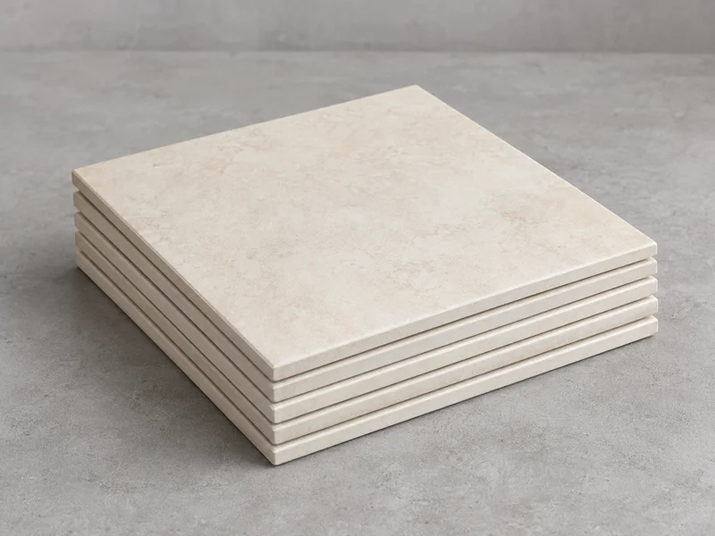
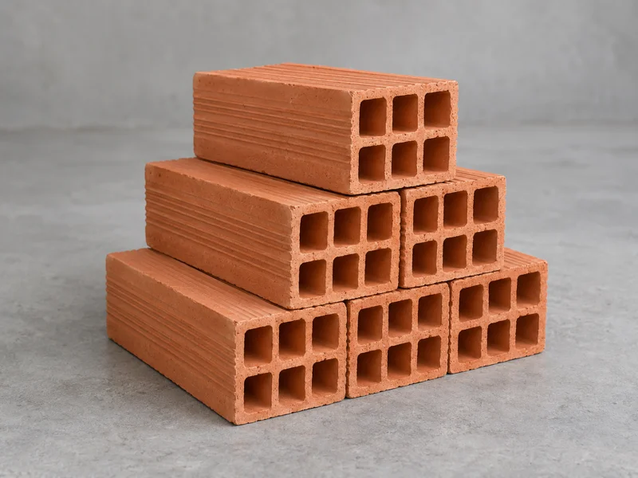
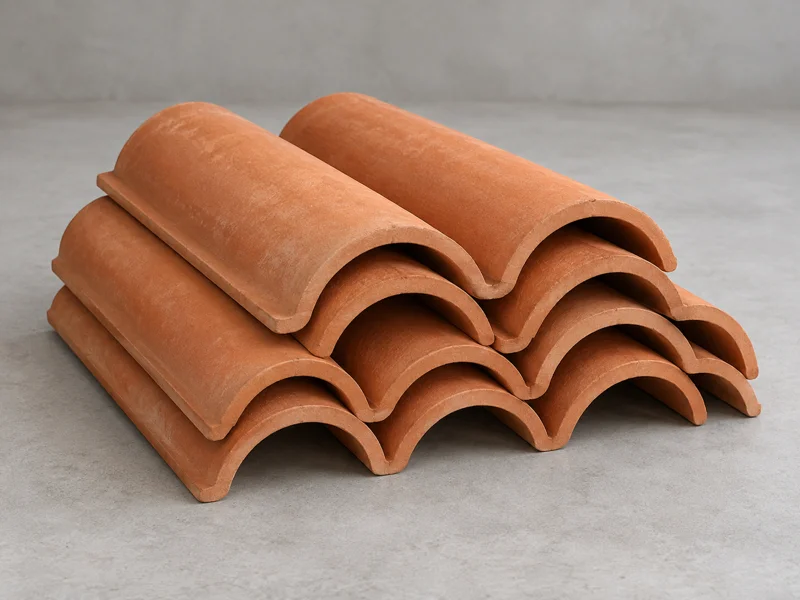

Imagens ilustrativas geradas com IA para anúncios fictícios. Não documentam materiais realmente disponíveis.

Pisos claros separados após uma reforma. Lote de exemplo com 12 m². Conferir medidas e tonalidade antes da retirada.
Fonte: imagem gerada com IA para o projeto ReForma, 2026.
Lote de exemplo com 80 tijolos armazenados em local coberto. Separar transporte compatível com a quantidade.
Fonte: imagem gerada com IA para o projeto ReForma, 2026.
Telhas de exemplo retiradas de uma cobertura. O interessado deve conferir formato, dimensões e condição de cada peça.
Fonte: imagem gerada com IA para o projeto ReForma, 2026.Uma boa foto ajuda a decidir
Ao anunciar em uma futura versão operacional, fotografe o lote completo e os detalhes relevantes. Mostre dimensões, embalagens e eventuais marcas de uso. As fotos devem corresponder ao material oferecido.
Evite incluir pessoas, documentos e o número do imóvel. O bairro é suficiente para a consulta inicial.
Experimentar uma doação